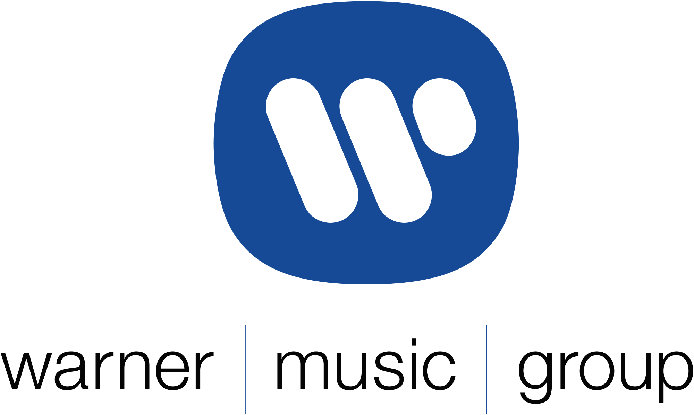

Responsabilities:
Support RHINO's Product Marketing team by strategizing, developing, and implementing marketing and promotional content across the label's and artists' social platforms
Manage communications surrounding all social media campaigns and PR-run promotional events
Collaborate cross-functionally internally with teams across PR & Sales and externally with brands and businesses to push forward digital marketing initiatives
Synthesize and present growth rates & trends of products' digital presence & engagement to evaluate successful partnerships and campaigns
Skills and Tools
Social media publishing calendars, Google Analytics